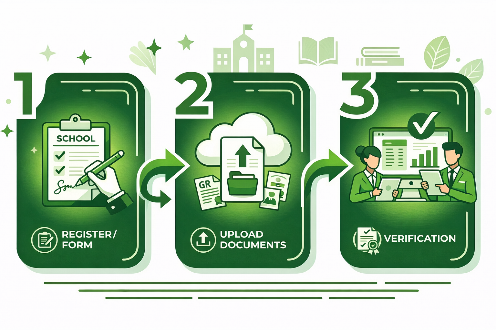

Alur Pendaftaran Siswa Baru
Berikut adalah langkah-langkah yang harus dilakukan oleh calon peserta didik untuk mengikuti seleksi penerimaan siswa baru SMK Bakti Husada.

- Buat Akun – Daftarkan diri melalui portal PPDB online dengan mengisi data pribadi awal.
- Isi Formulir Pendaftaran – Lengkapi biodata calon siswa pada halaman Isi Formulir.
- Pilih Jalur Pendaftaran – Pilih jalur yang sesuai: Zonasi, Prestasi, atau Afirmasi.
- Unggah Dokumen – Upload scan dokumen yang disyaratkan (ijazah, akta kelahiran, KK, pas foto).
- Verifikasi Berkas – Panitia akan memeriksa kelengkapan berkas yang telah diunggah.
- Pengumuman Hasil Seleksi – Cek pengumuman kelulusan pada tanggal yang telah ditentukan.
- Daftar Ulang – Calon siswa yang diterima wajib melakukan daftar ulang sesuai jadwal.